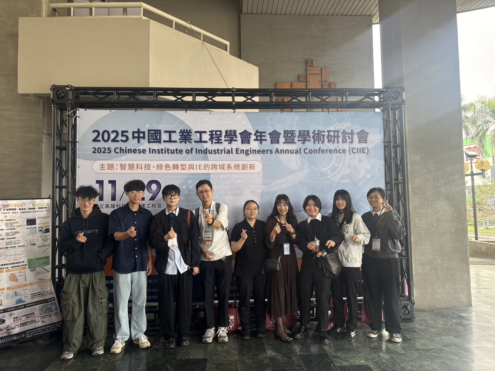
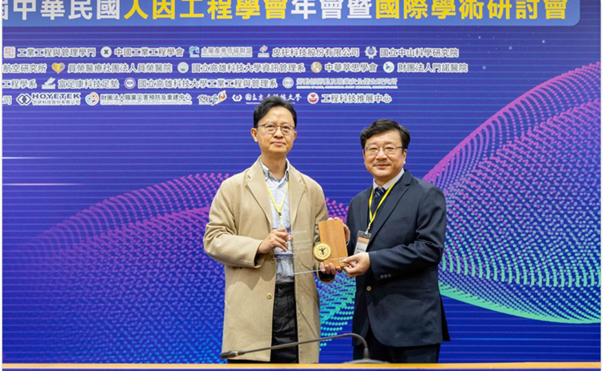
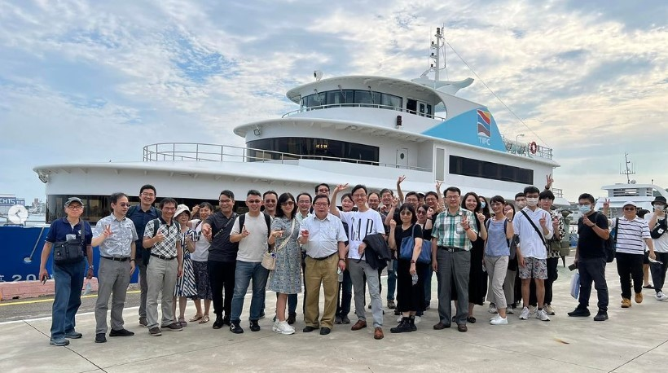
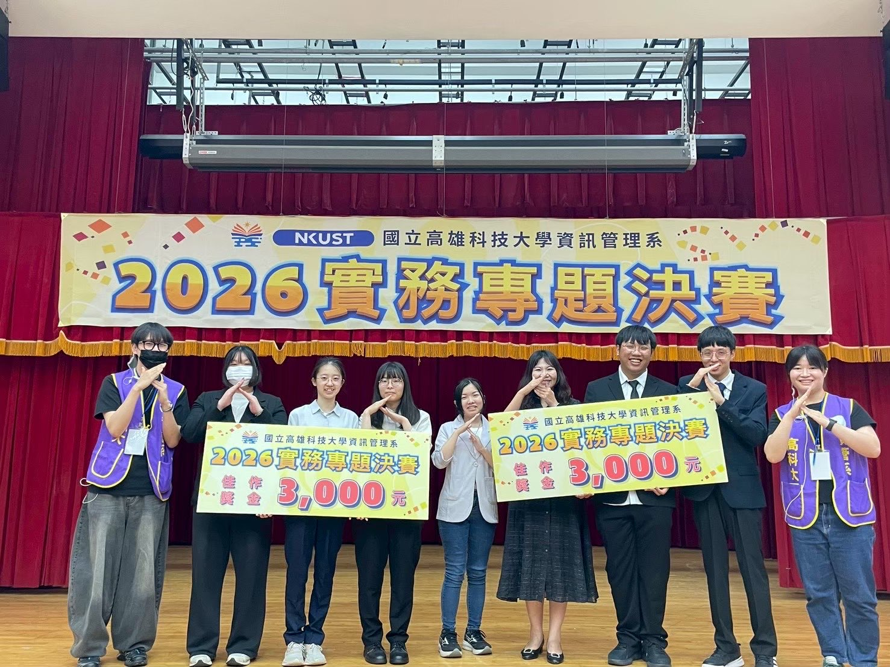
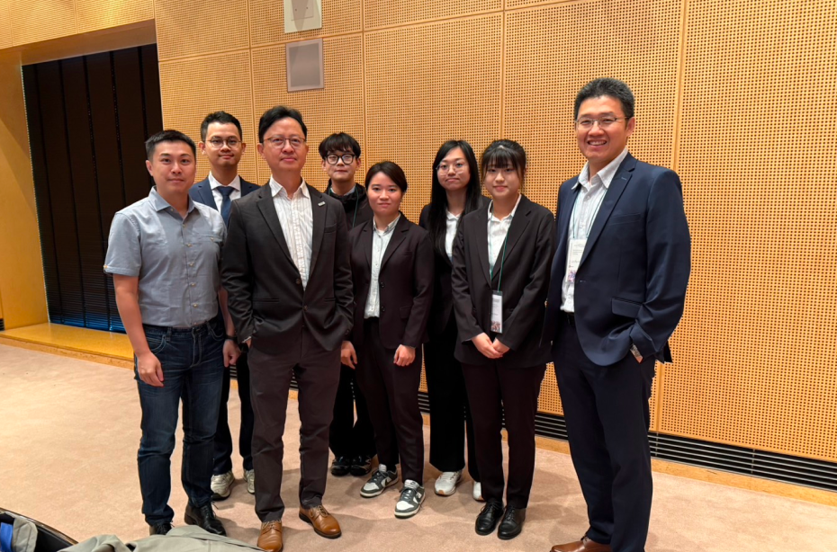

66th Annual Conference of the Japan Ergonomics Society (Fukuoka, Japan)
The team presented research in Fukuoka and exchanged ideas with international ergonomics scholars.
ConferenceNational Kaohsiung University of Science and Technology
Dept. of Information Management
The Lab for Human-Computer Interaction and Smart Technology studies every gaze, click, and decision between people and systems, turning ergonomics and HCI theory into verifiable academic and industry research outcomes.
Research Focus
The lab uses human-centered design as its shared methodology, spanning interface design, data analytics, and emerging interactive technologies. See the full research focus →
Interface usability evaluation, interaction flow design, and user research methods.
Consumer behavior and business-model analysis on social platforms.
Turning massive, diverse, real-time data into decision value.
Exploring human-machine collaborative work to meet flexible production and service needs.
HCI Lab
Moments from conference presentations, lab gatherings, and everyday research work.






The team presented research in Fukuoka and exchanged ideas with international ergonomics scholars.
ConferencePresented the latest research progress and exchanged research methods with peer labs.
ConferenceA regular end-of-semester gathering that strengthens the bond between faculty and students.
Lab LifeDesign of an AR-assisted system and human-factors research model for human-robot collaboration in smart factories.
Research GrantJoin Us
We welcome students with a background in information management, industrial design, or related fields who are passionate about user research.